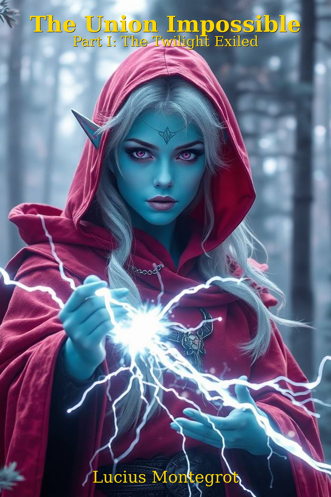

Welcome, wanderer. This is no ordinary author site. Here, reality sways gently in the breeze of Elven wine and questionable visions brought by Halfling pipe‑herb.
The Many Faces of Lucius
The Humble Historian
Lucius Montegrot is merely the humble scribe of the events he claims to have witnessed in a vision, probably induced by too much Elven wine and pipe‑herb. He insists that any resemblances to real persons, gods, or liches are purely coincidental and that he’s never even heard of a phoenix the size of a cathedral roof.
The Book
The Union Impossible – Part 1: The Twilight Exiled is now available on Kindle. Exiled, hunted, and haunted by gods both mad and fading, Aluriel must survive a world that fears what she is becoming. But power never comes without a price… read a free sample here .
Hidden Lore
Somewhere on this page lies a secret. Can you find it?